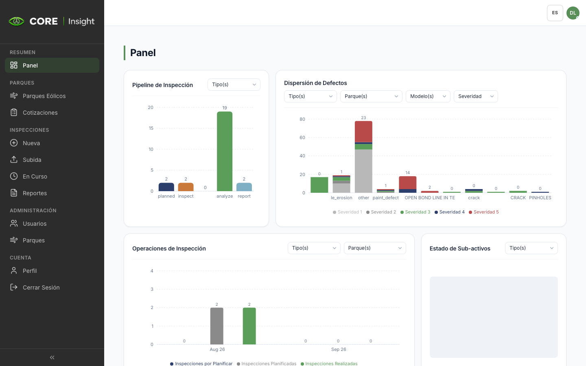
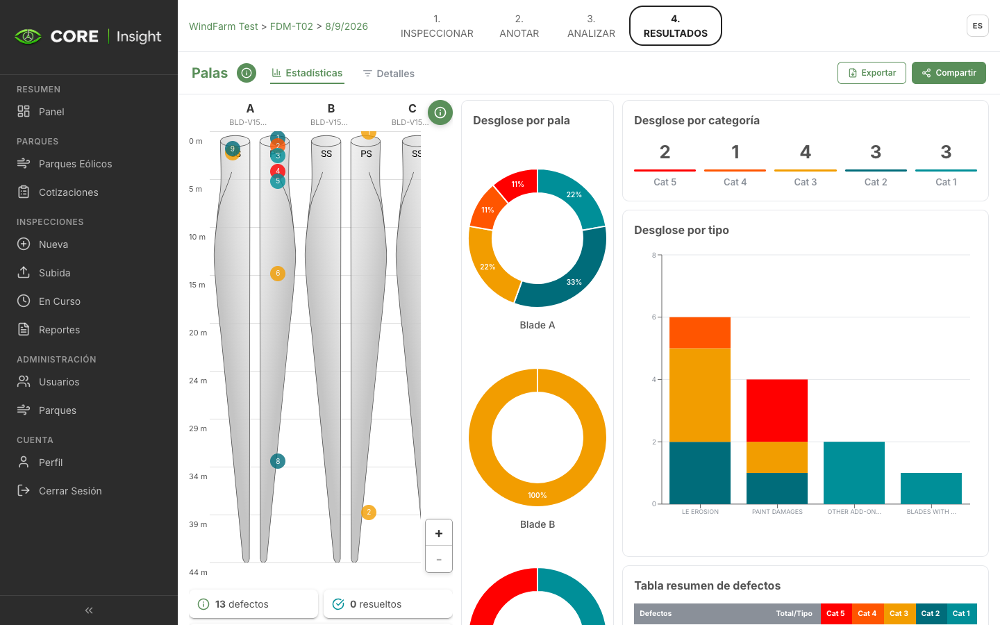

Encuentro Anual DPEC 2026 · 25 de noviembre
Mantenimiento y reparación de aspas
mediante acceso por cuerdas
De la inspección a la evidencia de reparación, en una sola plataforma: CORE Insight
Risto Martínez Ramírez · CORE-TEC SPA
El problema
Lo que hoy le cuesta al dueño del parque
Un trabajo en cuerdas bien hecho, pero difícil de demostrar y de seguir en el tiempo.
- Cientos de fotos por pala, repartidas en carpetas y correos.
- Defectos sin clasificación común: cada informe usa criterios distintos.
- Reparaciones sin evidencia ordenada por etapa.
- Sin historial comparable entre inspecciones de la misma turbina.
- Informes que tardan semanas en llegar al dueño.
La plataforma
CORE Insight: un solo flujo, cuatro pasos
Cada pala, cada cara y cada defecto quedan trazados desde la foto hasta el informe.
1. InspeccionarCarga de fotos por pala y cara
2. AnotarMarcar defectos sobre la imagen
3. AnalizarTipo, categoría 1 a 5, distancia a raíz, causa y siguiente paso
4. ResultadosGráficos, tabla de defectos, exportar y compartir
ParquesActivos, turbinas y modelos
CampañasInspección, reparación, limpieza, certificación
InformesPDF y XLSX listos para el dueño
AccesoRoles y enlace compartible
Vista de operación
Panel: el estado de todos los parques
Pipeline de inspecciones, dispersión de defectos por tipo y severidad, operaciones por mes.

Parque eólico
Un parque, todas sus campañas
- Potencia total, fecha de puesta en marcha y número de sub-activos.
- Tabla de turbinas con última inspección y cantidad de inspecciones.
- Pestañas por tipo de trabajo: Inspección, Reparación, Limpieza y Certificación de polipastos.
Turbina
Historial por turbina
- Modelo, potencia y última inspección.
- Fotos subidas, porcentaje revisado y defectos por inspección.
- Buzón de documentos: el informe del trabajo queda junto a la turbina.
Pasos 2 y 3
Del defecto en la foto al dato estructurado
Esto es lo que se muestra en vivo durante la demo.
- Visor con zoom, brillo, contraste y modo de avance rápido.
- Selector de pala (A, B, C) y cara (SS, PS, LE, TE) con diagrama de la pala.
- Marcas rectangulares, circulares y a mano alzada, con marca de revisión.
- Editor de defectos: tipo, categoría 1 a 5, distancia a raíz, causa raíz y siguiente paso.
- Comparación con inspecciones anteriores de la misma turbina.
Paso 4
Resultados: el defecto ubicado en la pala
Posición exacta a lo largo de la pala, desglose por pala, por categoría y por tipo.

Reparación
Evidencia de reparación, etapa por etapa
El técnico en cuerdas captura desde la app móvil. El dueño ve el resultado ordenado en la plataforma.
- Etiqueta
- Análisis de falla
- Saneado
- Laminación
- Sistema de vacío
- Manta térmica (inicio postcurado)
- Resultado de laminación
- Ajustado de superficie post laminado
- Aplicación de filler
- Ajustado de superficie post filler
- Aplicación de pintura
Se eligen las mejores fotos por etapa y salen directo al informe de reparación.
Más allá de las palas
Certificación de polipastos y limpieza
- Certificación: preparativos, inspección visual y mecánica, inspección crítica, torques, prueba de carga y cierre.
- Verificaciones y mediciones capturadas por la app móvil.
- Limpieza por zona: palas, nacelle, hub y torre.
- Informe generado con las fotos seleccionadas.
Captura en campo
Cuerdas, dron y plataforma, un mismo registro
- App móvil del técnico: etapas de reparación, limpieza y certificación.
- Dron DJI Matrice 4E (en desarrollo): vuelo automático y fotos por cara y posición radial, subidas directo a la plataforma.
- Plataforma web: anotación, análisis, cotizaciones, trazabilidad e informes.
Una inspección con dron puede priorizar dónde bajar con cuerdas.
Qué gana el dueño del parque
Decisiones con datos, no con carpetas
TrazabilidadDe la foto al informe, por pala y cara
ComparabilidadMismo criterio de categoría en todas las inspecciones
EvidenciaReparación documentada por etapa
RapidezInforme y enlace compartible al terminar
Gracias
Veamos su parque en CORE Insight
Coordinemos una demo con los datos de su parque.
Risto Martínez Ramírez · CORE-TEC SPA